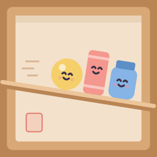
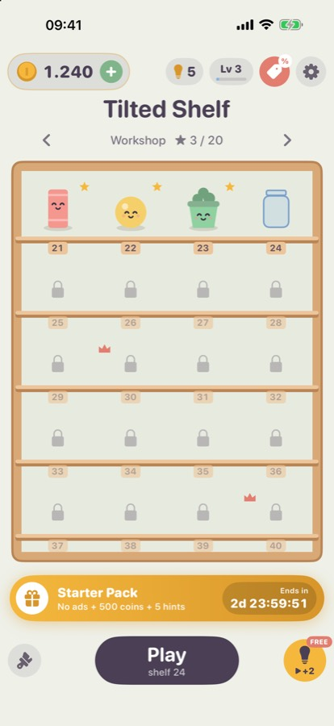
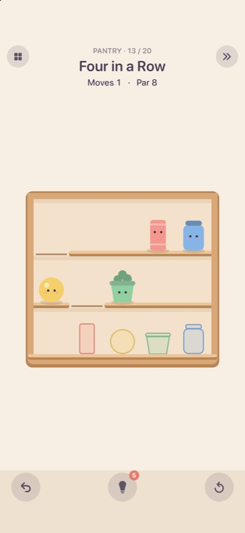
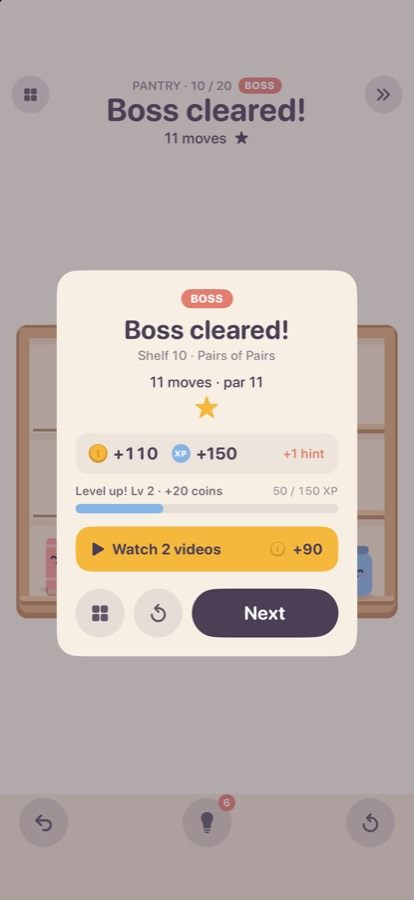

Home / Tilted Shelf / Support

Tilted Shelf (Eğik Raf)
Support
Get Tilted Shelf




Legal: Privacy Policy · EULA
Questions, problems or ideas? We usually reply within 1–2 business days.
Please include your device model, iOS or Android version and, if it's about a shelf, the shelf number.
Frequently asked questions
I'm stuck on a shelf.
Tap the hint button to see the next move (10 coins), or skip the shelf (30 coins) and come back to it later. Undo and restart are always free.
Can I play with a keyboard?
Yes. ↑ ↓ (or W S) pick a shelf, 1–9 jump to one, ← → (or A D) tilt it. Z or ⌫ undoes, R restarts, H shows a hint and Return goes to the next shelf.
I bought "Remove Ads" but I don't see it on my new device.
Open Settings or the shop in the game and tap Restore Purchases. Make sure you are signed in with the same Apple Account (iOS) or Google Account (Android) you used to buy it.
My coins, hints or skips are gone after reinstalling.
Coins, hints, skips and shelf progress are saved only on your device, so they can't be restored after the app is deleted. Only Remove Ads can be restored.
I still see videos after buying Remove Ads.
Remove Ads turns off the videos between shelves. Reward videos (for a free hint or extra coins) only play when you choose to watch them.
How do I change my ad privacy choices?
If you're in the EEA, the UK or Switzerland, use Settings → Privacy Choices in the game. On iOS you can allow or deny tracking under iOS Settings → Privacy & Security → Tracking; on Android you can reset or delete your advertising ID under Android Settings → Privacy → Ads.
The leaderboard or achievements don't show up.
On iOS, sign in under iOS Settings → Game Center; on Android, sign in to Google Play Games. Then reopen the game. Your stars are sent the next time you finish a shelf.
How do I start over?
Settings → Reset Progress erases solved shelves and stars. Coins, hints, skips and purchases are kept.
How do I get a refund?
Purchases are handled by Apple or Google. On iOS, request a refund at reportaproblem.apple.com; on Android, from your Google Play order history.
Terms of use
Use of the app is governed by our Terms of Use; on iOS, Apple's Standard End User License Agreement (EULA) also applies. How we handle data is described in the Privacy Policy.
Eğik Raf — Destek
Bir sorun mu yaşıyorsunuz ya da bir öneriniz mi var? Genellikle 1–2 iş günü içinde dönüş yapıyoruz.
Lütfen cihaz modelinizi, iOS ya da Android sürümünüzü ve sorun bir rafla ilgiliyse raf numarasını yazın.
Sık sorulan sorular
Bir rafta takıldım.
İpucu düğmesiyle bir sonraki hamleyi görebilir (10 coin) ya da rafı geçip (30 coin) sonra dönebilirsiniz. Geri alma ve baştan başlama her zaman ücretsizdir.
Klavyeyle oynayabilir miyim?
Evet. ↑ ↓ (ya da W S) raf seçer, 1–9 doğrudan o rafa geçer, ← → (ya da A D) rafı eğer. Z ya da ⌫ geri alır, R baştan başlatır, H ipucu gösterir, Return sonraki rafa geçer.
"Reklamları Kaldır"ı satın aldım ama yeni cihazımda görünmüyor.
Oyunda Ayarlar'ı ya da mağazayı açıp Satın Almaları Geri Yükle'ye dokunun. Satın aldığınız Apple Hesabı (iOS) ya da Google Hesabı (Android) ile giriş yapmış olmalısınız.
Uygulamayı yeniden yükleyince coin, ipucu ve geçişlerim gitti.
Coin, ipucu, geçiş ve raf ilerlemesi yalnızca cihazınızda saklanır. Bu yüzden uygulama silinince geri getirilemez. Yalnızca Reklamları Kaldır geri yüklenebilir.
Reklamları Kaldır'dan sonra da video görüyorum.
Reklamları Kaldır, raflar arasındaki videoları kapatır. Ödüllü videolar (ücretsiz ipucu ya da ek coin için) yalnızca siz izlemeyi seçerseniz açılır.
Reklam gizlilik tercihlerimi nasıl değiştiririm?
Avrupa Ekonomik Alanı, Birleşik Krallık veya İsviçre'deyseniz oyunda Ayarlar → Gizlilik Tercihleri'ni kullanın. iOS'ta takibe izin verme ya da reddetme seçeneği iOS Ayarlar → Gizlilik ve Güvenlik → Takip bölümündedir; Android'de reklam kimliğinizi Android Ayarlar → Gizlilik → Reklamlar bölümünden sıfırlayabilir ya da silebilirsiniz.
Lider tablosu veya başarımlar görünmüyor.
iOS'ta iOS Ayarlar → Game Center'dan, Android'de Google Play Games'ten giriş yapıp oyunu yeniden açın. Yıldızlarınız bir sonraki rafı bitirdiğinizde gönderilir.
Baştan nasıl başlarım?
Ayarlar → İlerlemeyi Sıfırla çözülen rafları ve yıldızları siler. Coin, ipucu, geçiş ve satın almalar kalır.
İade nasıl alırım?
Satın almaları Apple ya da Google yönetir. iOS'ta iadeyi reportaproblem.apple.com adresinden, Android'de Google Play sipariş geçmişinizden isteyebilirsiniz.
Kullanım koşulları
Uygulamanın kullanımı Kullanım Koşulları'mıza tabidir; iOS'ta ayrıca Apple'ın Standart Son Kullanıcı Lisans Sözleşmesi (EULA) geçerlidir. Verilerin nasıl işlendiği Gizlilik Politikası'nda anlatılır.